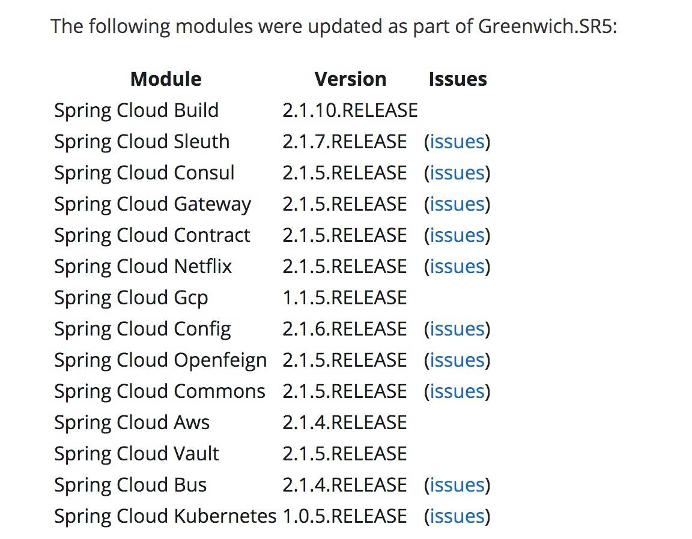
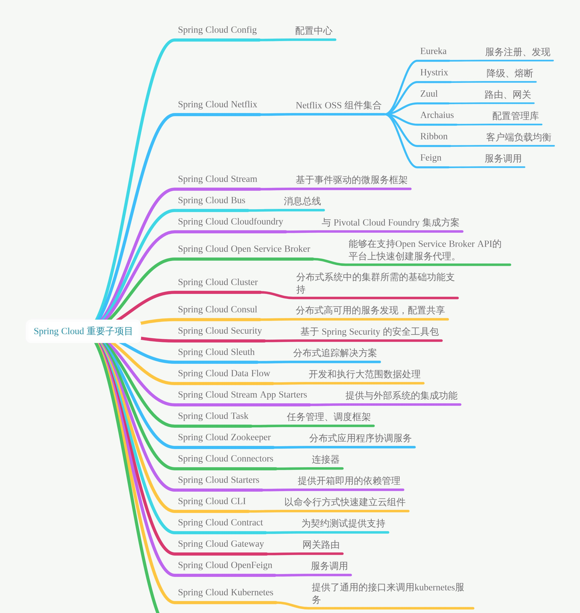
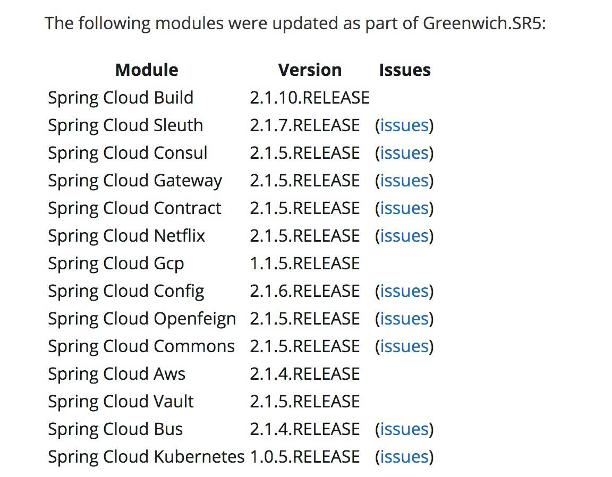
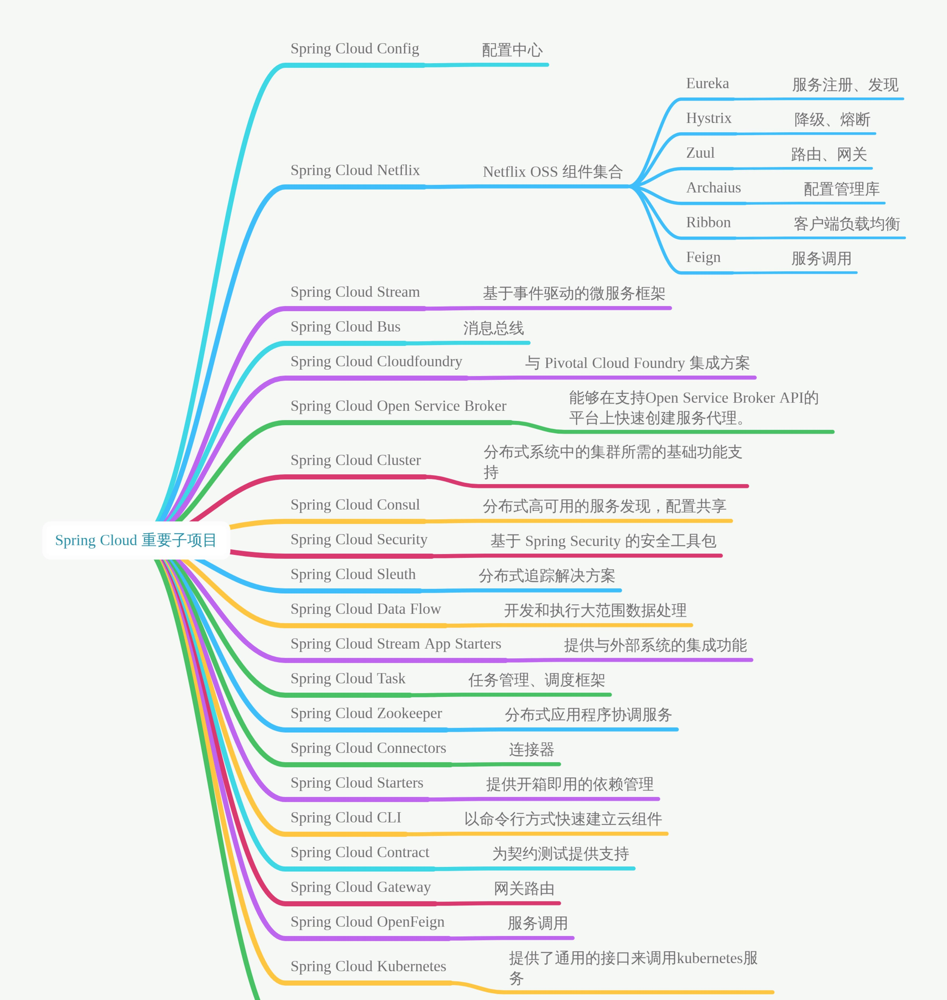
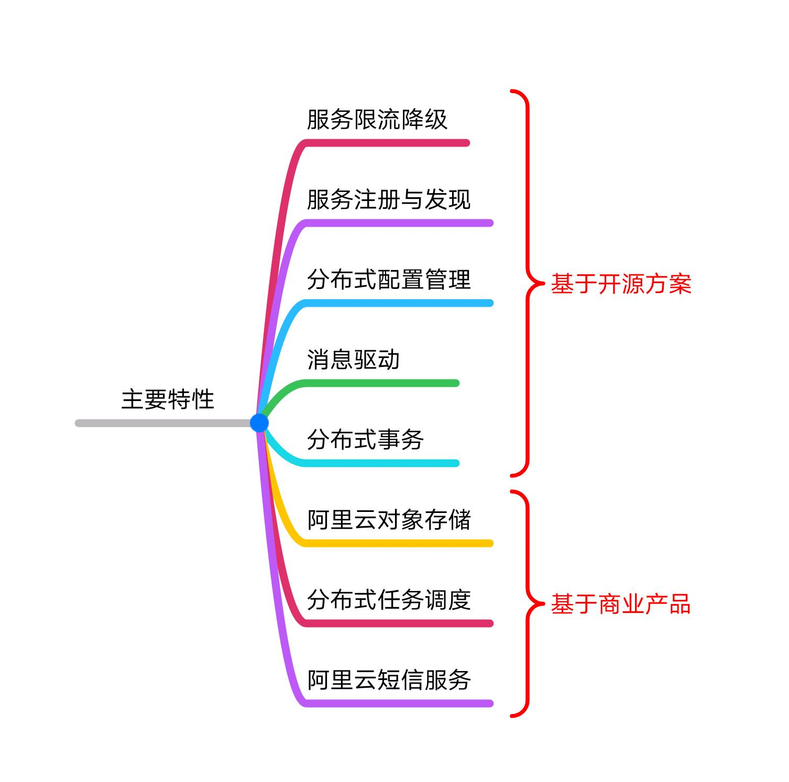

- 00 开篇导读.md
- 01 以真实“商场停车”业务切入——需求分析.md
- 02 具象业务需求再抽象分解——系统设计.md
- 03 第一个 Spring Boot 子服务——会员服务.md
- 04 如何维护接口文档供外部调用——在线接口文档管理.md
- 05 认识 Spring Cloud 与 Spring Cloud Alibaba 项目.md
- 06 服务多不易管理如何破——服务注册与发现.md
- 07 如何调用本业务模块外的服务——服务调用.md
- 08 服务响应慢或服务不可用怎么办——快速失败与服务降级.md
- 09 热更新一样更新服务的参数配置——分布式配置中心.md
- 10 如何高效读取计费规则等热数据——分布式缓存.md
- 11 多实例下的定时任务如何避免重复执行——分布式定时任务.md
- 12 同一套服务如何应对不同终端的需求——服务适配.md
- 13 采用消息驱动方式处理扣费通知——集成消息中间件.md
- 14 Spring Cloud 与 Dubbo 冲突吗——强强联合.md
- 15 破解服务中共性问题的繁琐处理方式——接入 API 网关.md
- 16 服务压力大系统响应慢如何破——网关流量控制.md
- 17 集成网关后怎么做安全验证——统一鉴权.md
- 18 多模块下的接口 API 如何统一管理——聚合 API.md
- 19 数据分库后如何确保数据完整性——分布式事务.md
- 20 优惠券如何避免超兑——引入分布式锁.md
- 21 如何查看各服务的健康状况——系统应用监控.md
- 22 如何确定一次完整的请求过程——服务链路跟踪.md
- 23 结束语.md
05 认识 Spring Cloud 与 Spring Cloud Alibaba 项目
前面我们已经粗略的将项目的骨架搭建完成，并初步引入一些基础支撑功能，为后续的开发打好基础。本篇将介绍 Spring Cloud 及 Spring Cloud Alibaba 两个项目，从理论角度作个整体性掌握，后续进入开发实战作好铺垫工作。 Spring Cloud Alibaba 是 Spring Cloud 的一个子项目，在介绍 Spring Cloud Alibaba 之前，先简单聊一聊 Spring Cloud 的情况。
Spring Cloud 介绍
Spring Cloud 官方文档地址：https://spring.io/projects/spring-cloud
它是由很多个组件共同组成的一套微服务技术体系解决方案，目前最新版本是 Hoxton，它的版本并不是我们常见的大版本、小版本的数字形式，Spring Cloud 的版本规划是按伦敦地铁站的名称先后顺序来规划的，目的是为了更好的管理每个 Spring Cloud 子项目的版本，避免自己的版本与子项目的版本号混淆，所以要特别注意两个项目的版本对应情况，以免实际应用中产生不必要的麻烦。
随着新版本的迭代更新，有些低版本的 Spring Cloud 的不建议再应用于生产，比如 Brixton 和 Angel 两个版本在 2017 年已经寿终正寝。  （ Spring Cloud 与 Spring Boot 的版本对应情况，来源于官网）  ( 某 Spring Cloud Greenwich 版本与子项目的版本对应情况 ) Spring Cloud 基于 Spring Boot 对外提供一整套的微服务架构体系的解决方案，包括配置管理、服务注册与服务发现、路由、端到端的调用、负载均衡、断路器、全局锁、分布式消息等，对于这些功能 Spring Cloud 提供了多种项目选择，可从官网的主要项目列表一窥端倪。  看上图有个比较突出的子项目： Spring Cloud netflix，由 Netflix 开发后来又并入 Spring Cloud 大家庭，它主要提供的模块包括：服务发现、断路器和监控、智能路由、客户端负载均衡等。但随着 Spring Cloud 的迭代，不少 Netflix 的组件进行了维护模式，最明显的莫过于 Spring Cloud Gateway 的推出来替代旧有的 Zuul 组件，有项目加入，也会有老旧项目退出舞台，这也是产品迭代的正常节奏。
（ Spring Cloud 与 Spring Boot 的版本对应情况，来源于官网）  ( 某 Spring Cloud Greenwich 版本与子项目的版本对应情况 ) Spring Cloud 基于 Spring Boot 对外提供一整套的微服务架构体系的解决方案，包括配置管理、服务注册与服务发现、路由、端到端的调用、负载均衡、断路器、全局锁、分布式消息等，对于这些功能 Spring Cloud 提供了多种项目选择，可从官网的主要项目列表一窥端倪。  看上图有个比较突出的子项目： Spring Cloud netflix，由 Netflix 开发后来又并入 Spring Cloud 大家庭，它主要提供的模块包括：服务发现、断路器和监控、智能路由、客户端负载均衡等。但随着 Spring Cloud 的迭代，不少 Netflix 的组件进行了维护模式，最明显的莫过于 Spring Cloud Gateway 的推出来替代旧有的 Zuul 组件，有项目加入，也会有老旧项目退出舞台，这也是产品迭代的正常节奏。
这些子项目，极大的丰富了 Spring Cloud 在微服务领域中应用范围，几乎无需要借助外部组件，以一已之力打造全生态的微服务架构，并与外部基础运维组件更好的融合在一起。
下面再介绍一个近两年出现的一个新生项目 ： Spring Cloud Alibaba。
Spring Cloud Alibaba 介绍
官网地址：https://github.com/alibaba/spring-cloud-alibaba 它是 Spring Cloud 的一个子项目，致力于提供微服务开发的一站式解决方案，项目包含开发分布式应用服务的必需组件，方便开发者通过 Spring Cloud 编程模型轻松使用这些组件来开发分布式应用服务，只需要添加一些注解和少量配置，就可以将 Spring Cloud 应用接入阿里分布式应用解决方案，通过阿里中间件来迅速搭建分布式应用系统。 项目特性见下图：  包括一些关键组件：
- Sentinel：把流量作为切入点，从流量控制、熔断降级、系统负载保护等多个维度保护服务的稳定性。与 Netflix 的 Hystrix 组件类似，但实现方式上更为轻量。
- Nacos：一个更易于构建云原生应用的动态服务发现、配置管理和服务管理平台，同时具备了之前 Netflix Eureka 和 Spring Cloud Config 的功能，而且 UI 操作上更加人性化。
- RocketMQ：一款开源的分布式消息系统，基于高可用分布式集群技术，提供低延时的、高可靠的消息发布与订阅服务，目前已交由 Apache 组织维护。
- Dubbo：Apache Dubbo™ 是一款高性能 Java RPC 框架，自交由 Apache 组织孵化后，目前社区生态很活跃，产生形态越来越丰富。
- Seata：阿里巴巴开源产品，一个易于使用的高性能微服务分布式事务解决方案，由早期内部产品 Fescar 演变而来。
以上组件都是均是开源实现方案。下面提到的几个组件都是结合阿里云的产品形态完成的功能，后续的案例开发实战不引入商业产品，需要的小伙伴可以购买后拿到对应的 API 直接接入即可。
- Alibaba Cloud ACM：一款在分布式架构环境中对应用配置进行集中管理和推送的应用配置中心产品，与开源产品 Nacos 功能类似。
- Alibaba Cloud OSS: 阿里云对象存储服务（Object Storage Service，简称 OSS），是阿里云提供的海量、安全、低成本、高可靠的云存储服务。您可以在任何应用、任何时间、任何地点存储和访问任意类型的数据。
- Alibaba Cloud SchedulerX: 阿里中间件团队开发的一款分布式任务调度产品，提供秒级、精准、高可靠、高可用的定时（基于 Cron 表达式）任务调度服务。
- Alibaba Cloud SMS: 覆盖全球的短信服务，友好、高效、智能的互联化通讯能力，帮助企业迅速搭建客户触达通道。
在使用过程中，版本问题同样需要关注。  （截图来源于 Spring 官网）
（截图来源于 Spring 官网）
Spring Boot 介绍
不管是 Spring Cloud 还是 Spring Cloud Alibaba 项目，都是基于 Spring Boot ，所以先将 Spring Boot 掌握后，才能更好的应用这两个项目。提供的大量的 starter 组件，更是方便我们快速的应用相应的功能，由于其内置了应用容器( Tomcat ，Jetty ，Undertow )，无须再构建成 war 文件去部署，并遵从约定优于配置的原则，高效开发应用。
下面的链接是一份 Spring Boot 的全量参数配置，相信对你会有帮助。 https://docs.spring.io/spring-boot/docs/2.2.4.RELEASE/reference/html/appendix-application-properties.html
本篇介绍了课程中使用到的三个关键项目，这里只是做个简单的概念了解，后续将结合实际业务进入开发工作。采用 Spring Boot 构建项目，一般直接是 jar 的形式运行，但有些小伙伴还是有偏爱 war 包情况，哪用 Spring Boot 搭建的项目如何构建出 war 包呢？